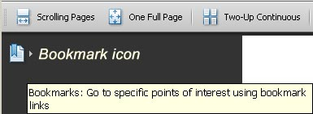
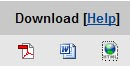
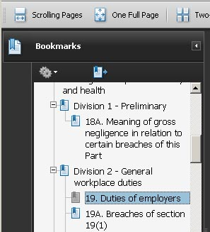
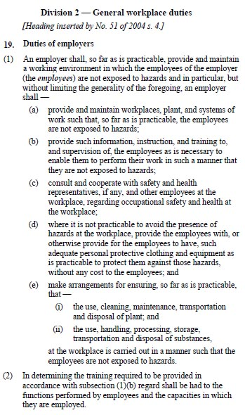

|
Online access to specific sections
of OS&H Act and Regulations

If you have downloaded the Act then click on the bookmark icon as shown in the opposite figure.

(you can also download the Act as a pdf-file, MS-word or a html-file).
However, the most appropriate download is using a pdf-file.
If you click on the bookmark icon then it will expand and you'll see the contents of all parts, divisions, and section as shown in the opposite figure. If you click on on any section, then that specific section of the Act will be shown.

Please use the slider bar to scroll up or down to access the information you are looking for.
Students who are familiar with webpage navigation don't no need to buy the Act or the Regulations because it's easy to download it from the State Law Publisher site. If you work with the downloaded Act & Regulations then refer how to arrange your website on the task bar to do the quizzes.
.
|